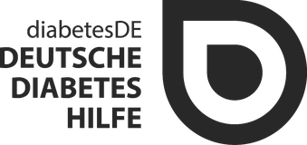
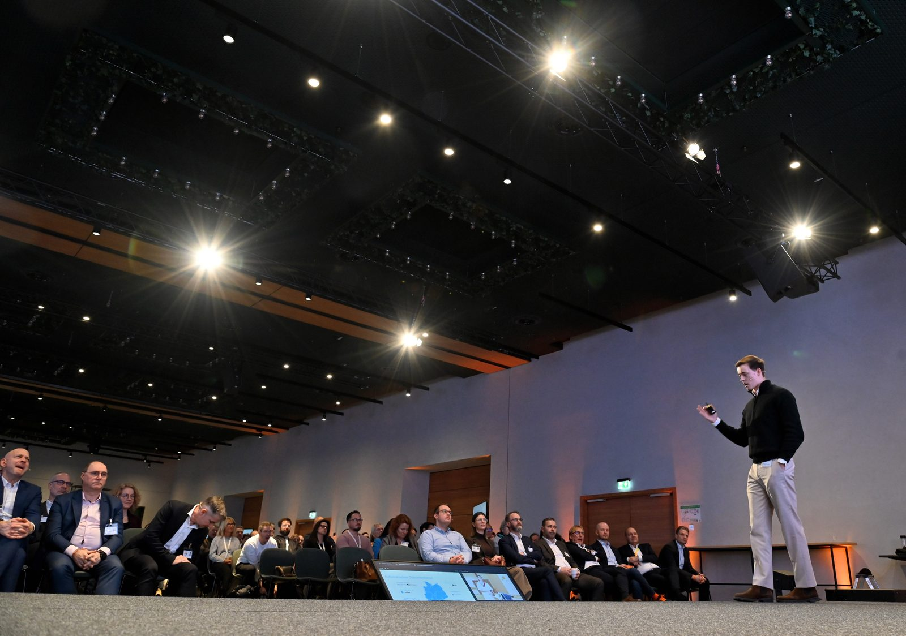
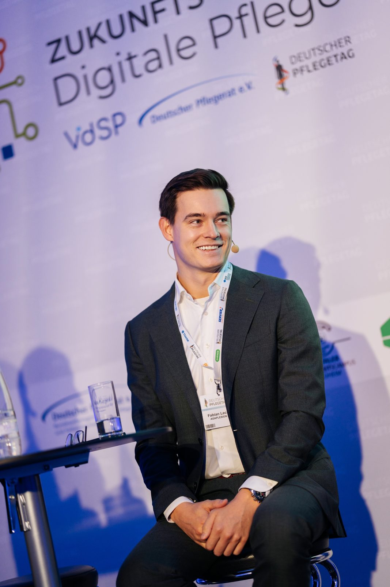
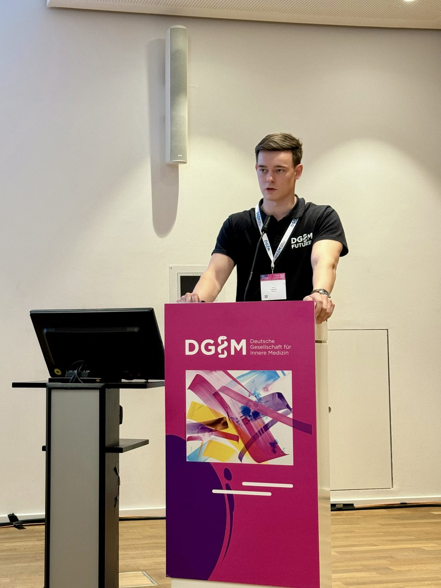

Vorträge
Über 85 Vorträge, Panels und Workshops seit 2022, für Fachgesellschaften, Kliniken, Krankenkassen und die forschende Industrie. Fortbildungen auf Wunsch CME-zertifiziert.
Ausgewählte Vorträge
Eine Auswahl. Weitere Anfragen für 2027 sind willkommen.
2026
- Nov.Deutscher Pflegetag, Berlin

- Nov.DDG Herbsttagung, Dresden

- Okt.FH Aachen, Aachen

- Okt.DGKIMED Summit, Berlin, Charité

- Sept.Frankfurt am Main

- Aug.

- Mai
- Apr.132. DGIM-Kongress, Symposium der AG Hausärztliche Internistinnen und Internisten, Wiesbaden
- Apr.Recare AI Summit, Berlin

2025
- Nov.DDG, 106. Kurs Klinische Diabetologie
- JuliTIMETOACT GROUP Insights, Köln
- JuniSiemens Healthineers, Referenzkundenworkshop

- MaiBKK Tag, BKK Landesverband Bayern, München

- Apr.Novo Nordisk, Spezialistentreffen Diabetologie, Radebeul

- MärzDRG-Forum, Berlin

- Feb.Frankfurt am Main
- Jan.Lilly, DMP-Tagung, Bonn

2024
- Nov.diabetesDE, Meilensteine der modernen Diabetologie, Berlin

- Nov.DDG-Präsenz, Berlin
- Sept.Novo Nordisk, Zukunftsforum Diabetes, Mainz
- Sept.Siemens Healthineers, DGKL, Bremen
- Aug.Künstliche Intelligenz – Gibt es bald keine Rheumatologen mehr?Rheumasymposium, Herne
- MaiKongress der Gesundheitsnetzwerker, Berlin

- MärzKI in der Diagnostik seltener ErkrankungenParlamentarischer Abend, Förderverein unerkannte und seltene Erkrankungen, Wiesbaden
- MärzLilly, Face-to-Face, Frankfurt am Main
2023
- Okt.22. Europäischer Gesundheitskongress, München

- Okt.Siemens Healthineers, DGKL, Mannheim
- Sept.RANLP 2023, Varna
Formate
- Keynote
- 20 bis 45 Minuten für Kongresse, Jahresauftakte und Symposien.
- Zertifizierte Fortbildung
- CME-zertifizierte Vorträge für Ärztinnen und Ärzte, in Präsenz oder online.
- Panel und Moderation
- Podiumsdiskussionen zu KI-Strategie, Regulierung und Versorgung.
- Workshop
- Praxisnahe Formate für Teams, Qualitätszirkel und Führungskräfte.
Themen
 KI in der DiabetologieSensordaten, Entscheidungsunterstützung und Patientenkommunikation in Klinik und Schwerpunktpraxis.
KI in der DiabetologieSensordaten, Entscheidungsunterstützung und Patientenkommunikation in Klinik und Schwerpunktpraxis. Sprachmodelle in der MedizinWas ChatGPT und andere Sprachmodelle in Diagnostik, Dokumentation und Ethik leisten und wo ihre Grenzen liegen.
Sprachmodelle in der MedizinWas ChatGPT und andere Sprachmodelle in Diagnostik, Dokumentation und Ethik leisten und wo ihre Grenzen liegen. Labor und DiagnostikKI und Robotik im Labor, von der Präanalytik bis zum Befund.
Labor und DiagnostikKI und Robotik im Labor, von der Präanalytik bis zum Befund. KI im KrankenhausStrategie, Einführung, Pflege, Praxissoftware und Regulierung aus Sicht eines großen Klinikverbunds.
KI im KrankenhausStrategie, Einführung, Pflege, Praxissoftware und Regulierung aus Sicht eines großen Klinikverbunds.
Auf der Bühne




